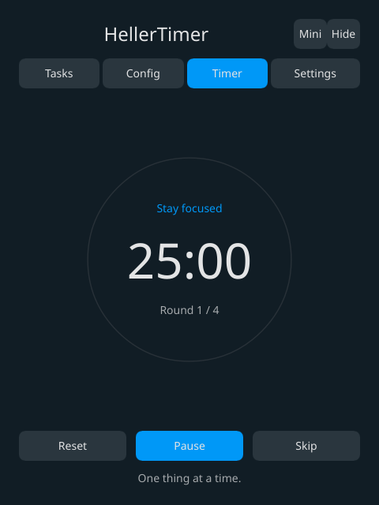

Your pace, your rules.
Focus sessions, short rests, long breaks and scheduled special breaks. Strict mode helps you follow through.
LESS NOISE. MORE MOMENTUM.
A familiar Pomodoro rhythm, rebuilt as a native app. Settle into your work. Let HellerTimer keep the time.
Rust + Slint · Open source · No account

Work with your attention.
Give it a proper break.
Focus sessions, short rests, long breaks and scheduled special breaks. Strict mode helps you follow through.
Keep tasks in lists, add notes and move them as your day takes shape. Everything stays on your device.
A desktop tray, a small always-on-top window and deadline-based timing. No webview, no ticking worker thread.
02 / SMALL BY DESIGN
Pomatez inspired the experience. Rust and Slint power the native implementation. We publish measurements, not guesses.
Run the benchmark ↗No benchmark published yet.
The reproducible benchmark measures the entire process tree: private memory, RSS, CPU, threads and Linux wakeups.
03 / MAKE A LITTLE SPACE
Desktop is the main experience. The web version is a demo.
◈ Made with Slint